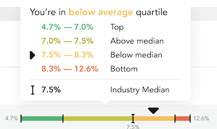

Benchmark Report
The Benchmark Report is available to advertisers either receiving only this report, or that have their own TAG TrustNet node.
The objectives of the benchmark report are to allow you to:
- Analyze your programmatic supply chain using Log Level Data (LLD) combined with feeds from the Fiducia Data Exchange.
- Compare your data to the findings of the ANA Study and, every month, to the latest industry Benchmark.
- Use the TrueKPI framework to define and monitor your optimization roadmap to boost ad spend productivity.
This documentation will provide an overview of each section of the Benchmark Report and how you can get the most out of it.
There is a significant amount of help is built into this report to help you better understand this information being presented. First, there are a number of visualizations of data on the right side of the screen in the Key Findings and Industry Benchmark sections. If you hover your mouse over these visualizations you will get more information about how to read these visualizations and the meaning of the icons. Secondly, most of the metrics in this report have more information about them if you hover over the help icon (?) to the right of it.
How to Read Benchmark Graphs
Throughout this report there are graphs being presented. This section will help you better able to interpret the data in these graphs.
The metrics for each benchmark is based off of the median for the industry. A median is the midpoint for a distribution of data—in this case there will be as many advertisers with a score above this point as below. The quartiles are based on the median as well. So for example the first quartile will include the 25% of advertisers who have the lowest scores, the next quartile will include another 25% of advertisers with the next highest scores, etc.
Because the distribution of advertiser scores will vary for each metric, the size of the quartiles should be expected to change for each metric.
In the example below, the median for this metric is 7.5%, which means that 50% of the advertiser scores are above this value and 50% are below. The lowest quartile is 4.7-7.0%, which means 25% of the advertisers had a score in this range. 25% of advertisers had a score between 7.0-7.5%. The inverted triangle is the score for a particular advertiser.

The graphs in this report with colors are for those metrics where it is generally agreed that there are better and worse scores. The graphs that are in blue are for metrics where it is not clear which scores are considered better or worse.
Key Findings
This section is meant to summarize the most important highlights in the Benchmark Report, including:
- Loss of Media Productivity: How much of you ad spend is on low quality inventory (as determined by your ad verification company).
- Transaction Costs: How much of your ad spend is going to transaction costs to your DSP(s) and SSPs.
- TrueKPI Opportunity: How much you can improve your ad spend productivity by using the TrueKPI Framework.
- Top 3 recommendations to improve your ad spend efficiency.
To get more information about the graphs in this section hover your mouse over them.
Distribution of Display Ad Spend
This section provides a profile of your inventory that was included in this Benchmark Report.
Spend Waterfall
This section provides details about your fees and costs across your DSP and SSPs, and your media productivity. There are definitions for each of the components in this graph in the Industry Benchmark section below.
Options for this section
Exclude MFA From TrueAdSpend: If you click this toggle, you can see what the Spend Waterfall would look like without MFA impressions being identified separately.
Show Optimization Opportunity: If you click this toggle, you can see what the improvements would be to the IVT, non-measureable, and non-viewable inventory if spend was redirected based on a simulation by Fiducia–using the TrueKPI Framework. More details about this optimization are in the TrueKPI Optimization Opportunity section below.
Industry Benchmarks
This section provides insights into how you compare to the industry average using data collected from the 2023 ANA Programmatic Media Supply Chain Transparency Study.
More information about the metrics can be obtained by hovering your mouse over the help icon (?) to the right of each metric name.
To get more information about the graphs in this section hover your mouse over them.
Options in this section
In this section you are able to select one of the following options: Summary, Private Marketplace, Open Marketplace. If you select Private Marketplace or Open Marketplace you will see the Industry Benchmarks section data filtered by this selection.
TrueKPI Optimization Opportunity
This section focuses on the opportunity for you to improve your ad spend productivity using the TrueKPI Framework.
How to read the graph
The bubbles in this graph represents groups of inventory that were analyzed. The green bubbles are inventory that had a high percent of TrueImpresions and were purchased at a lower CPM. The red bubbles are inventory that had a low percent of TrueImpresions and were purchased at a higher CPM. The yellow bubbles represent inventory that has an average percent of TruImpressions and were purchased at an average CPM.
How to understand the analysis results displayed in the box to the right
Matched Ad Spend: How much ad spend was included in the analysis, which includeds all impressions that were deterministically matched between the DSP and Ad Verification platforms.
TrueImpressions: How many of the impressions met the criteria for a TrueImpression.
TrueCPM: The cost per thousand impressions that were matched between the DSP and Ad Verification platform and meet the criteria for a True Impression.
Additional TrueImpressions: The number of additional impressions that meet the criteria for a TrueImpression after the “Show Optimized” toggle is clicked.
Additional Value: The amount of additional TrueAdSpend that can be realized after the “Show Optimized toggle is clicked.
Options in this section
Breakdown by: This gives you several options to look at the clusters of data in different ways. The default is Supply Path, which is a combination of SSP and domain or application. The definition for Seller ID is provided in the Industry Benchmark section above
Exclude MFA From TrueImpressions: If you click this toggle, you can see how the results in this section would look like if impressions that were served on MFA domains were not included.
Show Optimized: if you click this toggle at the top of this section, you will see the results of a simulation performed by Fiducia that shows the potential improvement that is estimated when you have the Log Level Data to shift spend from poorer performing inventory to better–using the TrueKPI Framework. When you click Show Optimized, the ad spend that previously went to the inventory that was in the red bubbles has been shifted over to inventory that has a significantly higher percent of TrueImpressions and significantly lower CPMs–and appears as green and yellow bubbles.